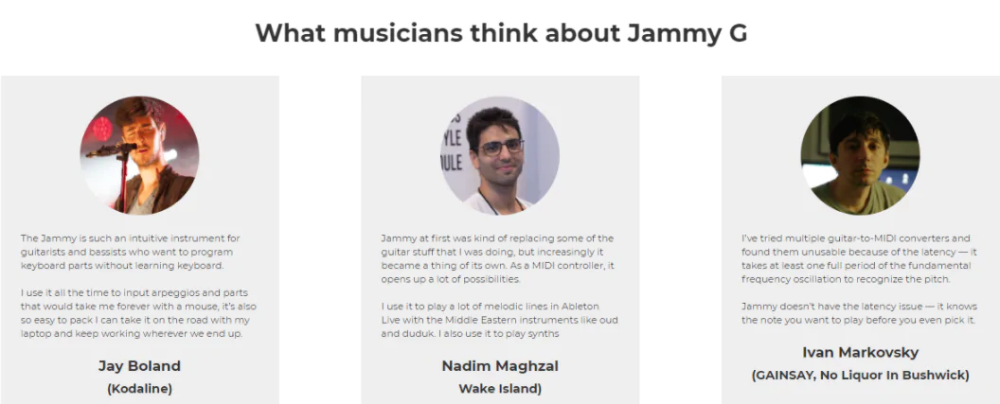

Як написати текст для лендінгу
Підготовка лендінгу починається зі підготовки структури, збору інформації про конкурентів та цільової аудиторії. Про це ми писали у першій статті із серії про посадкові сторінки «Як створити лендінг власноруч». Сьогодні розповімо, як написати текст для лендінгу.
Вміст:
Що писати в блоках лендінгу
Посадкова сторінка будується із блоків. Кожен виконує своє завдання: привертає увагу читача до продукту, описує можливості, розвіює сумніви, називає ціну, запрошує до покупки. Так крок за кроком ви підводите читача до здійснення цільової дії.
Основні блоки, що використовуються на лендінгу:
- шапка лендінгу;
- заголовок;
- підзаголовок;
- заклик до дії;
- опис товару;
- характеристики, вигоди та переваги;
- кому це корисно;
- результат;
- інформація про компанію;
- відгуки клієнтів;
- портфоліо;
- вартість товару або послуг;
- як замовити;
- FAQ, або відповіді на часті запитання;
- підписка на розсилку.
Звісно, на одній сторінці використовуються не всі блоки. Які розділи додати залежить від складності та специфіки продукту, прогрітості цільової аудиторії.
Наприклад, якщо відвідувач переходить з контекстної реклами, він нічого не знає про вас. Йому важливо дізнатися і про продукт, і про компанію. Якщо ж на лендінг переходять постійні читачі з профілю в Instagram, можна розповісти лише про продукт. Відтак розглянемо завдання кожного блоку та розповімо, що в них писати.
Шапка лендінгу
Інформація у шапці допомагає читачеві зрозуміти, куди він потрапив, та підвищує довіру до компанії. Це особливо важливо, якщо відвідувач нічого не знає про компанію чи фахівця та приходить, наприклад, з реклами.

У шапці пишуть назву організації або ім’я фахівця, рід діяльності, іноді додають контакти: телефон, посилання на соцмережі тощо.
Втім, сьогодні все частіше можна побачити лендінги без шапки. Як у прикладі:
Не станемо стверджувати, що такий підхід не має права на життя, та зазначимо: шапка допомагає читачу орієнтуватись на сторінці.
Заголовок
Головне завдання заголовка — привернути увагу користувача та мотивувати читати далі. Як цього досягти:
- Назвати товар так, щоб було зрозуміло, про що йдеться. Якщо продаєте курс копірайтингу, краще так і писати «курс», а не «навчання» або «методика».
- Визначити цільову аудиторію. Щоб людина одразу зрозуміла: це для мене.
- Виділити головну користь для клієнта або проблему, яку він вирішить за допомогою продукту.
Все це реалізовано на сайті з ремонту одягу. Заголовок «Даю одягу друге життя» одразу допомагає зрозуміти, яка послуга надається:
Коли пишете заголовок, не зупиняйтеся на першому ліпшому варіанті. Тестуйте різні прийоми привернення уваги. Наприклад, числа роблять пропозицію більш конкретною і привабливою для читача. Тож краще писати «знижка 15%», ніж просто «знижки» або «низька ціна»:
Зміст посадкової сторінки має відповідати рекламному оголошенню або анонсу в розсилці, з якого перейде користувач. Тоді процес покупки буде для нього зрозумілий. Враховуйте це при написанні заголовка, і якщо в оголошенні обіцяєте п’ятиденний курс, пишіть на лендінгу так само.
Підзаголовок
Іноді сформулювати текст заголовка одним-двоми реченнями буває складно. Розкрити деталі, докладніше описати користь та мотивувати відвідувача читати далі допоможе підзаголовок.
Підзаголовок може складатися з одного речення. Та частіше зустрічаємо лендінги, коли замість класичного підзаголовка бачимо короткий опис продукту.
Також у підзаголовках можна інформувати про важливі новини. На лендінгу ресторації, що спеціалізується на вуличній їжі бачимо, що у якості підзаголовка використовується відповідь на одне з найбільш поширених під час війни питань: чи працює заклад.
Заклик до дії
Прочитавши інформацію на лендінгу, відвідувач має чітко розуміти, що робити далі: заплатити за товар, завантажити прайс, зареєструватися на вебінар. У цьому допомагає заклик до дії або call to action.
Call to action розміщується на першому екрані та внизу лендінгу. На довгій сторінці заклик до дії ставлять через кожні 3-4 блоки, щоб не примушувати читача повертатися на початок або в кінець:
Заклик до дії має випливати із пропозиції в заголовку. Якщо написати просто «Замовити» або «Купити», то людина, яка переглядає сторінку, може і не згадати, що було в заголовку. У прикладі вище call to action сформульовано добре: компанія пропонує клінінгові послуги та пише на кнопці «Замовити прибирання».
Опис товару
Блок з описом товару потрібен у разі, якщо товар складний чи новий. Наприклад, як у разі пристрою Carsifi, який дозволяє підключати телефон до авто без дротів. Для такого продукту буде доречним блок «Що це?».
Водночас такий блок на сайті, де продають якийсь буденний товар — наприклад, одяг — виглядатиме зайвим та неінформативним.
Якщо є можливість, демонструйте властивості товару на відео:
Характеристики, вигоди та переваги
У цьому блоці описують характеристики товарів, можливості програм, вебсервісів та мобільних додатків. Якщо йдеться про інфопродукт — нові навички. Важливо показати, які переваги чи вигоди отримує покупець. Якщо людина не побачить користі, пропозиція не матиме для неї цінності.
На лендінгу сервісу для підприємців є опис і можливостей, і вигод:
Кому це корисно
Блок «Кому корисно» описує цільову аудиторію товару або послуги. Мета блогу: відвідувач має впізнати себе. Наприклад, на лендінгу буткемпу з запуску та маштабування бізнесу за допомогою digital-інструментів є портрети потенційних учасників:
Можна писати не тільки, кому підходить курс, а й кому не підходить. Таким чином допоможете потенційному покупцю зробити зважений вибір і не тільки відсієте не цільову аудиторію, а й підвищите рівень довіри цільової:
Результат
При продажі інфопродуктів — навчання, консультацій, чат-ботів, занять із тренером — важливий блок «Що ви отримаєте». Людині важко уявити результат, який вона може отримати, тому на сторінці ви моделюєте його самі. Ось як це зробили у онлайн-платформі Femosofia, що спеціалізується на психологічній підтримці жінок:
Тож ви вже розповіли про товар та його переваги. Для певної частини цього достатньо, щоб вирішити. Але більшість шукатиме підтвердження вашим словам. Тож у наступних блоках відповідатиме на запитання «Чому я мушу вам вірити?».
Інформація про компанію
Блок про компанію додають, коли необхідно засвідчити досвід компанії, експертність. Це важливо для медичних центрів, консалтингових компаній та фахівців, які пропонують професійні послуги. А також інфобізнесу.
Ми вже говорили, що конкретика викликає більше довіри. Тому намагайтеся не писати на лендінгу загальні фрази — «лідер ринку» чи «професійний колектив». Замініть їх цифрами та фактами, як це зробила онлайн-школа, що пропонує курси для проджект-менеджерів:
Відгуки клієнтів
Надати вагу вашим аргументам та дипломам допоможуть клієнтські враження. Тож це один із найважливіших блоків на сторінці.
Відгуки виконують кілька завдань:
- Підвищують довіру: якщо люди користуються, це добре.
- Знімають заперечення, що продукт не виправдає сподівань.
- Передають емоції людей і розставляють акценти.
Відгуки можна подати у різних форматах: не лише у звичному тексті, а й у відео. Також їх можна комбінувати. Як це зробив український стартап Jammy Instruments, що розробив портативну гітару Jammy Evo:
Зауважте: не всі відгуки однаково корисні. Дуже загальні фрази або такі, що демонструють надмірний захват і вихваляння, можуть викликати недовіру та відлякати людину. Щоб читач вам повірив, надавайте перевагу відгукам про продукт, які характеризують його з різних боків, нехай і не ідеально.
Ось приклад якісного відгуку із сайту курсів контекстної реклами:
Чому цей відгук корисний:
- У ньому йдеться про результати навчання — підвищення доходу вчетверо.
- Описуються переваги — клієнти приходять самі, що породжує впевненість у майбутньому.
- Згадуються складнощі та перепони на шляху.
- Відгук підписаний, додається посилання на Facebook людини, яка його залишила.
Отримати настільки детальні відгуки від клієнтів непросто. Після покупки люди повертаються до своїх справ і не поспішають витрачати час на опитування. Якщо й лишають відгук, то часто пишуть загальні фрази: «мені все сподобалося» або «дуже корисна інформація».
Щоб зібрати відгуки, складіть анкету з простими, але конкретними питаннями. Або ж домовтеся про коротке інтерв’ю телефоном і запишіть розмову на диктофон, а потім затранскрибуйте. Не забудьте попередити про це співрозмовника.
Портфоліо
Ще один спосіб засвідчити експертність — продемонструвати виконану роботу. Портфоліо важливе для дизайн-студій, копірайтерів та інших бізнесів, де фахівці працюють за індивідуальним замовленням або клієнти платять за майстерність.
Вартість товару або послуг
Тут зазначають ціну та стимулюють здійснити покупку: дають обменежі часом бонуси та знижки. Якщо ціна невисока і продаєте «імпульсний» товар, можна підштовхнути відвідувача до покупки:
Високу ціну розбивають на частини, формують пакети функцій чи послуг, показують комплектність:
Якщо ви маєте кілька тарифів, подавайте інформацію лаконічно, можна у вигляді списку або порівняльної таблиці:
Як замовити
Цей блок демонструє, що відбудеться після заповнення заявки на сайті. Зазвичай це три-чотири кроки. Важливо не обмежуватися загальними фразами: замовте-оплатіть-отримайте, а опишіть процес покупки у компанії:
Відповіді на часті запитання
Цей блок відповідає на питання відвідувача «А що як..?». Наприклад, як повернути товар, якщо не підійде? Чи можна замовити нестандартну комплектацію? Чи може річ відрізнятись від картинки на сайті? Якщо ви пропишете відповіді на ці запитання, то зможете розвіяти сумніви зацікавлених відвідувачів та відсіяти тих, кому продукт не підходить.
До речі, це не обов’язково має бути «класичний» блок питання-відповідь. Можна взяти одне найбільш розповсюджене заперечення і опрацювати його. Як це зробила компанія GoIT, що спеціалізується на навчанні IT-фахівців.
Підписка на розсилку
Форма підписки на розсилку зазвичай розміщується у футері або відображається, коли відвідувач хоче залишити сторінку у вигляді поп-апа. Так ви можете утримати відвідувачів, які наразі не готові до покупки.
Важливо не просто запросити підписатися, а й пояснити цінність розсилки або запропонувати лід-магніт:
Можна запропонувати і разовий промокод на знижку:
Вдалі приклади тексту для лендінгу
Текст і дизайн на лендінгу однаково важливі. Дизайн допомагає передати емоції, а текст — інформацію для прийняття рішень. Щоб відвідувач зміг зробити вибір, інформація має бути конкретною та зрозумілою. Пояснимо на прикладах.
Блок з характеристиками та вигодами, які легко уявити
Часті помилки в блоці з вигодами — говорити лише про характеристики, вигадувати вигоди, які не важливі для клієнта, або писати загальні фрази.
Порівняйте два приклади. Перший — фрагмент лендінгу електробайка. Серед головних характеристик не лише сухі цифри — вигоди описані з прикладами. Наприклад: на одній зарядці можна проїхати 200 миль (321 км) — це шлях від Нью-Йорку до Філадельфії та назад.
Другий — опис переваг сервісу моніторингу українських соцмереж та ЗМІ. Цей текст про «ексклюзивність розробки» та її «попит на міжнародних ринках» — а не про реальну користь для користувача послуги:
При написанні тексту думайте не як похвалитися — а який зиск матиме користувач від використання продукту чи послуги. Завжди задавайтесь питанням: як мій продукт може покращити життя клієнта.
Зрозуміла схема роботи клієнта та замовника
Для покупця схема роботи з продавцем це як мапа для туриста. Коли знаєш послідовність дій, шанси дійти до пункту призначення зростають. У прикладі нижче описано послідовність кроків, а також додано скріни застосунку, який стане доступний після оплати програми.
Лендінг, в якому підходящий весь текст
Наостанок покажемо приклад лендінгу з текстом, де кожен блог, абзац і речення написані з думкою про клієнта:
Чому ми так вважаємо?
- Лендінг має шапку, що полегшує навігацію.
- Заголовок і підзаголовок одразу дають зрозуміти, куди потрапив відвідувач.
- Другий блок — про болі потенційного клієнта, у якому він впізнає себе і йде читати далі.
- Є інформація про можливості, які відкриває навчання. Кому підійде професія.
- Програма курсу не переобтяжена зайвою інформацією.
- Пояснюються переваги, чому слід обрати саме цю онлайн-школу.
- Є попередження про майбутні складнощі — і тут же пояснення, завдяки чому студент досягне успіху.
- Лендінг довгий, тож і кнопок багато, проте вони не дратують.
- Кнопки називаються відповідно до блоку, у якому розташовані.
Резюме
Тепер ви знаєте, які завдання вирішують різні блоки сторінки. Тож давайте підсумуємо основні правила при написанні тексту для лендінгу:
- Бути конкретним: зрозуміло називати продукт, використовувати цифри та факти. Це підвищує довіру.
- Описувати вигоди, а просто не характеристики. Люди мають розуміти, яку користь принесе ваш продукт.
- Тестувати різні формулювання та прийоми. Лендінг рідко пишеться раз і назавжди. Зазвичай, щоб створити сторінку з високою конверсією, потрібно зробити п’ять, десять і навіть більше спроб.
- Збирайте контакти відвідувачів, які наразі не готові до покупки, та працюйте з ними у майбутньому.
- Підготувати якісний текст лендінгу може тільки той, хто добре розуміється на продукті та цільовій аудиторії. Тож якщо ви віддаєте написання тексту сторонньому копірайтеру, приділіть час, щоб передати фахівцю інформацію та зробити якісне технічне завдання.
Створювати лендінги, збирати підписників та працювати з замовленнями вам допоможе SendPulse. Всі маркетингові інструменти компанії легко інтегруються між собою. В одному простому та інтуітивно зрозумілому інтерфейсі ви можете створювати і керувати emamarkl та SMS-розсилками, проводити спліт-тестування, додавати на свої сайти чат-ботів Telegram, Facebook, marknstagram і багато іншого.